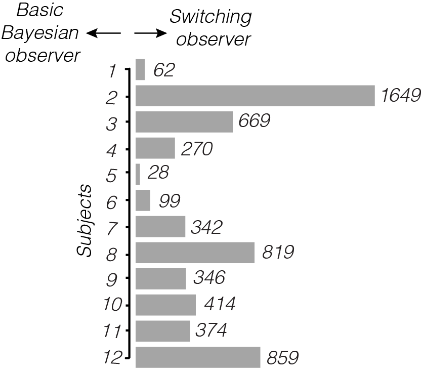
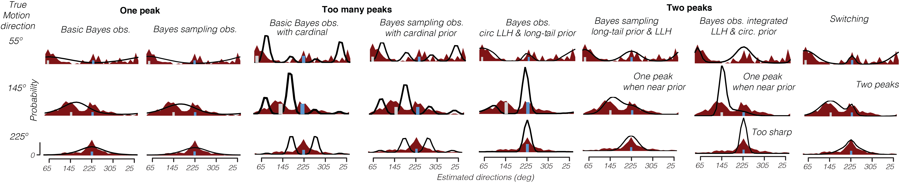

Approaches to inference.
Three main theories have been proposed as to how humans solve inference problems. 1) Humans might be rational : they use optimal statistical solutions to inference problems or 2) irrational and produce maladaptive solutions to inference problems or 3) they use heuristics computational shortcuts that approximate optimal solutions. This fits in with Herbert Simon theory of bounded rationality according to which humans use satisficing solutions (sufficient and satisfying) (Gigerenzer, Psychological review 1996)
Designing an inference experiment.
We designed a motion direction estimation experiment in which humans were asked to estimate the motion direction of noisy stimuli on a computer screen.
In this experiment statistical optimality can be achieved by combining noisy evidence of the motion with knowledge of the motion direction statistics learnt over motion stimulus history using Bayesian inference
Estimation error depends on evidence strength ....and on motion direction statistics
We looked at subjects average estimates for each displayed motion directions, for different level of noise in the stimulus (from 6% to 24% motion coherence) and different distributions of the motion direction (distribution standard deviation of 80º, 40º, 20º and 10º with fixed mean at 225º).
>> datapath = slgetdatapath('lab');
>> [fitP,fitPbkp,R2,sdata,fitPt,negLogl,negLoglbkp,...
Logl_pertrialBestfit,output] = SLfitBayesianModel({'sub01','sub02',...
'sub03','sub04','sub05','sub06','sub07','sub08','sub09','sub10',...
'sub11','sub12'},...
[NaN NaN NaN NaN NaN NaN NaN NaN NaN NaN NaN],...
'dataPathVM',datapath,...
'experiment','vonMisesPrior',...
'MAPReadout',...
'modelPredictions','withData',...
'directoryFitParameter','../modelfit/AIC/',...
'filename','fig03_04');
The Bayesian observer predicted subject estimate mean and variability very well..
But it failed to explain the distribution of subjects estimates: where the model predicts unimodal distributions, subjects estimate distribution were clearly bimodal.
The behavior rather posits for an model in which people do not integrate their prior and sensory likelihood in a posterior that estimate that lie in between the two but rather switch between the two representations.
We tested other plausible Bayesian observers but all failed to explain the data better than the switching observer

We also tested whether subject did not learn priors but simply relied on the previous trial displayed motion direction (a recency strategy). However the data clearly indicate that subjects were biased toward the prior mean and not the previous trial and that the stronger the prior and the stronger their bias toward the prior mean, indicating that subjects learn and used the prior mean and strengths.
Why is estimates relationship to physical directions nonlinear?
The bias was also the largest for directions displayed the nearest to the prior mean and the smallest on the opposite side of the prior, producing a nonlinear relationship between displayed and estimated directions. This effect is due to the circularity of the space: the average bias become smaller when directions are displayed further from the prior because the evidence is more and more likely to be pulled from both sides of the prior which reduces the average bias. This decreasing bias with increasing distance effect effectively disappears in a linear space as the evidence is always pulled from one side of the prior.
The variability was also the lowest for directions displayed the nearest to the prior mean and the largest on the opposite side of the prior. This effect was due to the same reason that the average bias decreased further from the prior: evidence were more often pulled from both sides of the prior which increased estimate dispersion.
>> slsimulateBayesianModelEstimateSpace(5:20:360);
Humans use environment statistics
A Bayesian observer that uses the statistical distribution of motion directions fit the data beter than a maximum likelihood observer that only uses sensory likelihood. This indicates that subjects incoporated and ued prior knowledge about environment statistics for inference and did not solely rely on the sensory evidence.
>> bo = [77182.68 74175.23 84145.32 46451.09 61913.16 75357.9 54584.24 62731.75 84927.68 62633.63 63233.81 66099.47];
>> mlo = [100803.6 92739.7 110810.02 56504.8 68159.3 88925.5 68253.5 68253.5 101627.7 71161.2 76223.3 76223.3];
>> [e,ci,m,s] = slMakeCI(bo,0.95)
>> [e,ci,m,s] = slMakeCI(mlo,0.95)
This is even clearer when loooking at the AIC difference between the two models, averaged over subjects
>> [e,ci,m,s] = slMakeCI(mlo - bo,0.95);
Switching between prior and evidence outperforms the Bayesian observer
>> model_ref = 'model_CompDiv';
>> models = {'model_Bayes_MAP'};
>> path = '/Volumes/DroboBKUP/data/dataPsychophy/...
proj01_priorStrength/modelfit/AIC/';
>> [~,~,aicDiff01] = slPlotModelsAICvsSwitchingAIC(model_ref,models,path);
>> figure('color','w')
>> SLdrawBar(aicDiff01,1:12,1:12,'facecolor',[.5 .5 .5]);

Subjects represented prior strengths accurately
>> models = {'model_Bayes_MAP'};
>> path = '/Volumes/DroboBKUP/data/dataPsychophy/... proj01_priorStrength/modelfit/AIC/';
>> [~,~,aicDiff01] = slPlotModelsAICvsSwitchingAIC(model_ref,models,path);
>> figure('color','w')
>> SLdrawBar(aicDiff01,1:12,1:12,'facecolor',[.5 .5 .5]);
We examined the fit parameters used to model subject prior strengths with the switching observer to determine whether subjects had accurate representations of the spread of the motion direction statistical distribution over trials (experimental prior). We compared the subjective prior strengths prescribed by the switching observer with those predicted by the Basic Bayesian observer.
We tested whether the switching observers predicted strength were statistically more accurate than the strengths predicted by the Bayesian observer. Most prior strengths were not normally distributed across subjects (lilliest, most p < 0.05) :
>> cd('~/proj/steeve/projInference/data/')
>> [~,~,data] = slcsvRead('data_PriorStrngths.csv');
>> [Pbo,Psw,subBOstd,subswstd] = slIsPriorStrgDisNormal(data);
So we compared the median over subjects of the four subjective prior strength parameters fitted by the switching observer to each subject’s data (Fig. 6b) to veridical strength and found that although the switching observer’s median fitted prior over subjects were significantly weaker than the 80º and 40º veridical priors (W = 7, p < 0.01 and W = 0, p < 0.01 respectively, one-sample Wilcoxon test), the switching observer’s fitted prior standard deviations for the 20º and 10º priors did not significantly differ from the veridical prior standard deviations (W=17, p=0.09 and W=27, p=0.38 for the 20 and 10 deg priors, one-sample Wilcoxon test). In contrast, the Basic Bayesian observer’s median fitted priors over subjects were all significantly weaker than the veridical priors (W=1, W=1, W=3, W=2, all p<0.01, for the 80, 40, 20 and 10 deg priors respectively, one-sample Wilcoxon test) which would suggest that the observers were unable to make accurate estimates of the prior distribution.
>> [pbo,psw,Hbo,Hsw,wbo,wsw] = slcompBoandSwPriorStrgToExp(subBOstd,...
subswstd,subExpstd);
Why other plausible Bayesian observers fail to switching
- a basic Bayesian model [Stocker 2006; Girshick 2011]
- a sampling Bayesian model [Pouget 2011]
- a basic Bayesian model with cardinal priors [Stocker 2006; Girshick 2011]
- a basic Bayesian model with likelihood computed from stimulus components [Stocker 2006; Girshick 2011]
- Hierarchical Bayesian inference [Mumford 2003]
>> model_ref = 'model_CompDiv';
>> models = {'model_Bayes_Sampling','model_Bayes_Sampling_withCard',...
'model_Bayes_WJMtailedPrior','model_Bayes_WJM',...
'model_Bayes_MAP_withCard',...
'model_Bayes_MAP','model_Bayes_MAP_FatTailPrior'};
>> path = '~/data/dataPsychophy/proj01_priorStrength/modelfit/AIC/';
>> [AICsvsSw,semAICsvsSw,aicDiff] = slPlotModelsAICvsSwitchingAIC(model_ref,...
models,path);

>> models = {'model_Bayes_Sampling','model_Bayes_Sampling_withCard',...
'model_Bayes_WJMtailedPrior','model_Bayes_WJM',...
'model_Bayes_MAP_withCard',...
'model_Bayes_MAP','model_Bayes_MAP_FatTailPrior'};
>> path = '~/data/dataPsychophy/proj01_priorStrength/modelfit/AIC/';
>> [AICsvsSw,semAICsvsSw,aicDiff] = slPlotModelsAICvsSwitchingAIC(model_ref,...
models,path);
We examined how well other Bayesian observers fit the data compared to the switching observer
>> model_ref = 'model_CompDiv';
>> models = {'model_Bayes_Sampling','model_Bayes_Sampling_withCard',...
'model_Bayes_WJMtailedPrior','model_Bayes_WJM',...
'model_Bayes_MAP_withCard',...
'model_Bayes_MAP','model_Bayes_MAP_FatTailPrior'};
>> path = '/Volumes/DroboBKUP/data/dataPsychophy/...
proj01_priorStrength/modelfit/AIC/';
>> [AICsvsSw,semAICsvsSw,aicDiff] = slPlotModelsAICvsSwitchingAIC(model_ref,...
models,path);
>> model_ref = 'model_CompDiv';
>> models = {'model_Bayes_Sampling','model_Bayes_Sampling_withCard',...
'model_Bayes_WJMtailedPrior', ...
'model_Bayes_WJM','model_Bayes_MAP_withCard',...
'model_Bayes_MAP',...
'model_Bayes_MAP_FatTailPrior'};
>> path = '/Volumes/DroboBKUP/data/dataPsychophy/...
proj01_priorStrength/modelfit/AIC/';
>> [AICsvsSw,semAICsvsSw,aicDiff] = slPlotModelsAICvsSwitchingAIC(...
model_ref,models,path);
We also examined the number of subjects for which switching outperformed the other Bayesian observers
>> cd('~/proj/steeve/projInference/data/)
>> [rowheader,colheader,data] = slcsvRead('modelfitData.csv');
>> [nRefWins,nNoWin,nRefLoses] = slPlotPropSubSwitchingVsBayesModels(rowheader,...
colheader,data, ...
'Switching observer')
Do subjects simply rely on the previous direction
An alternative hypothesis is that subjects simply switched biased their estimates toward the previous motion directions without learning the statistics of the motion directions over trials which is a heuristic that have already been used successfully to explained perceptual behavior [Loewenstein et al.,]. So we looked at where subjects averaged estimates lied in the trials in which the currently displayed direction was in between the previous direction (clockwise to the displayed direction) and the prior mean (counterclockwise to the displayed direction).
We first checked whether subjects were significantly biased toward the prior mean, thus away from the previous direction over subjects and conditions
>> [SigBias2priorAll,SigBias2prevdir,marginAll,ciAll,mAll,sAll] = ...
slplotandStatsPrevDirvsPriorBias({'sub01','sub02','sub03',...
'sub04','sub05','sub06','sub07','sub08','sub09','sub10',...
'sub11','sub12'},'~/data/dataPsychophy/proj01_priorStrength/');
The overall bias over all subject trials was 4.35 deg, 95% CI [ 3.14 5.57 ] toward the prior and the bias was significantly different from 0 indicating than subjects were on average significantly biased toward the prior and not the previous direction.
We further checked whether all subjects biased their estimates toward the prior and not the previous direction
>> [SigBias2priorAll, SigBias2prevdir, marginAll,ciAll,mAll,sAll] = ...
slplotandStatsPrevDirvsPriorBias({'sub01'},'~/data/...
dataPsychophy/proj01_priorStrength/');
4 out of 12 subjects were significantly biased toward the prior mean and not the previous direction (the average distance between the estimate and the current direction was 2.93 deg, 95% CI [0.03 5.82] for subject 1; 21.40 deg, 95% CI [17.30 25.51] for subject 2; 7.29 deg, 95% CI [4.55 10.02] for subject 4; 12.24 , 95% CI [ 6.70 17.78 ] for subject 10; all toward the prior
The remaining 8 out of 12 subjects were not significantly biased neither toward the prior nor toward the previous direction (the average distance between the estimate and the current direction was -0.56 deg, 95% CI [-5.66 4.55] for subject 4; -2.25 deg, 95% CI [-7.39 2.88] for subject 5; -0.43 deg, 95% CI [-4.18 3.32] for subject 6; 1.30 deg, 95% CI [-2.75 5.35] for subject 7; -1.99 deg, 95% CI [ -7.59 3.62 ] for subject 8; 3.97 deg, 95% CI [0.57 7.38] for subject 9; 1.57 deg, 95% CI [ -2.34 5.49 ] for subject 11; 1.38 deg, 95% CI [-3.97 6.72] for subject 12.
Eye movement
We examined whether subjects eye positions changed between prior conditions.
>> datapath = '~/../myProjData/';
>> [eyedatabank,output] = SLanalysesEyeMvt({'sub01'},'dataPath',datapath,...
'AnovaEyeMvt','plotEyeMvtStats','filename','test');
The eye positions averaged over subjects did not significantly change between priors
>> cd ~/.../projInference/data;
>> [rowheader,colheader,data] = slcsvRead('data_meanEyePosition.csv');
>> [m,ci,condition] = sleyePosMeanAndCIByPrior(data);